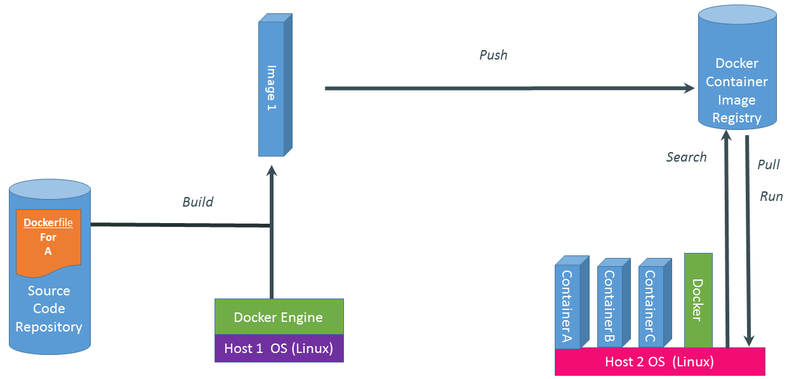

Introduction to Docker

What - Why - How
Hit Page down...
Docker, Containers and the Matrix from Hell
Cargo Transport Pre-1960
The Matrix from Hell

Solution: Intermodal Shipping Container

The Challenge

Also a Matrix from Hell

Docker is a Container System for Code

Docker Eliminates the Matrix from Hell

Docker Main Features
- Container virtualization - Isolated and content agnostic
- Build once, run everywhere
- Easily distributable
But this isn't new?!!?
So why should I care?
- Easy (and lightweight!) way to model reality
- Separation of Concerns
- Distributable images without overhead
VMs vs Containers

Why people care: Separation of Concerns

Why Developers Care
- have a clean, safe, hygienic, isolated and portable runtime environment for my app
- have a close to production environment for developing
- have no worries about missing dependencies, configuration, conflicting versions and other pain points during developing
- automate testing, integration, packaging…anything you can script
- test with different versions without risking the stable setup
- distribute the isolated container to anyone needs my app on their machine either inhouse (developers, QA) or externally (customers, servers)
Why Developers Care - continued...
- reduce/eliminate concerns about compatibility on different platforms, either your own or your customers
- have a working environment fast and reliably
- have a VM without the overhead of a VM
- instant replay and reset of image snapshots
- That’s the power of Docker
Why Devops care?
- configure once, distribute anywhere
- make the entire lifecycle more efficient, consistent, and repeatable
- eliminate inconsistencies between development, test, production, and customer environments
- support segregation of duties
- dignificantly improve the speed and reliability of continuous deployment and continuous integration systems
- because the containers are so lightweight, address significant performance, costs, deployment, and portability issues normally associated with VMs
Docker entities
Dockerfile
A Dockerfile contains the instructions to build an image
FROM ubuntu
RUN apt-get install -y apache2
ENV APACHE_RUN_USER www-data
ENV APACHE_RUN_GROUP www-data
ENV APACHE_LOG_DIR /var/log/apache2
EXPOSE 80
ENTRYPOINT ["/usr/sbin/apache2"]
CMD ["-D", "FOREGROUND"]
Image
A read-only File layer containing Libs/App
docker build -t="apache2" .
- Images never change. Instead they are re-built.
- Images do not have state.
- Images are stored in repositories and can be distributed through a Registry servers.
Container
To activate a "VM" in Docker you run a container from an Image.
docker run -d -p 80 -v /var/www/myapp apache2
Docker compose
A tool to define and activate a multi-container application "bundle" of containers in a single file, then spin your application up in a single command.
wp:
image: library/wordpress:latest
ports:
- 80:80
volumes:
- ~/wordpress:/var/www/html
links:
- mysql:mysql
mysql:
image: mysql:latest
volumes:
- ./data/mysql:/var/lib/mysql
- ./log/mysql:/var/log/mysql
.
Repository
A repository is a set of images on your local Docker server.
They can be shared by pushing it to a Registry server.
docker images
Registry server
A Registry is a hosted service containing repositories of images which responds to the Registry API.
You need a registry to pull Images you want to use.
docker pull apache2
Docker flow
Image - Container - Registry
Under the hood
- High Level—It’s a lightweight VM
- Own network interface
- Own process space
- Can share file volumes with host or not
- Can run stuff as root
- Can have its own /sbin/init (different from host)
Technology Stack
A lightweight VM = LXC (Linux Containers)
an operating-system-level virtualization environment for running multiple isolated Linux systems (containers) on a single Linux control host.
Technology Stack
Own network interface = Advanced virtual network interface
a virtual Ethernet bridge that automatically forwards packets between any other network interfaces that are attached to it. This lets containers communicate both with the host machine and with each other.
Technology Stack
Own process space = Kernel Namespaces and cgroups
behind the scenes Docker creates a set of namespaces and control groups for the container.
Technology Stack
File volumes = Union File System
a Git alike merging of file layers that produces a final filesystem structure.
Docker in production
- Everything at Google, from Search to Gmail, is packaged and run in a Linux container. Each week we launch more than 2 billion container instances across our global data centers.
- New Relic - Insights
-
"Docker has helped us deliver new services faster than ever before."
- Nic Benders, Director of Site Engineering - Ebay - Continuous integration
-
"We use Docker to implement an efficient, automated path from the developer's laptop through
test and QA.
- Senior Architect Ted Dziuba - Cambridge Healthcare - Continuous Delivery
- They replaced several AWS AMIs with a single bare metal host running Docker to speed up their Jenkins-based continuous delivery pipeline.
Docker + Tripsta = ?
Current state + Future options
Current state
- Images for most of our services and applications
- Private registry in the local lan - docker.tripsta.net
-
Compose bundle for
External services
MySQL, Gearman, ElasticSearch, RabbitMQ -
Compose bundle for
TP24
including internal Memcache, Mongo
External services bundle

External services without hassle
sudo apt-get install mysql elasticsearch rabbitmq
sudo apt-get install mysql elasticsearch rabbitmq
./compose.sh external-services up -d
| Service | State |
| externalservices_elasticsearch_1 | Up |
| externalservices_gearman_1 | Up |
| externalservices_mysql_1 | Up |
| externalservices_rabbitmq_1 | Up |
TP24 bundle

Development environment for TP24
./compose.sh tp24 up -d
# No more configuration issues!
Run migrations
./compose.sh run helper php scripts/db/migrate.php
Run tests
./compose.sh run helper ant
Run watchr
./compose.sh run helper watchr tests/watchr.rb
Development environment for TP24 - continued
Connect to MySQL
./compose.sh run helper php scripts/db/connect.php
Anything...
./compose.sh run helper [do anything you did]
RevOp bundle

The big picture

The future
-
Finalize development environment for TP24
XDebug -
Polish External services bundle
Tagged images, MySQL, Bats tests -
Have a real Private registry
Improve stability, accessibility -
Automate the bundle activation and orchestration
Spin up staging environments on demand - ...
Want to Learn More?
- www.docker.io
- Documentation
- Getting started (tutorial, installation, guide, etc)
- Introductory whitepaper
- Github: dotcloud/docker
- IRC: freenode #docker
- Google Group: docker-user
- Twitter: @docker
- Meetups: www.docker.io/meetups